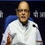

Warning that growing populism and isolationism could lead to further deterioration of global trade, the finance minister advocated for multilateral efforts to boost trade to support global growth.
Washington: Finance Minister Arun Jaitley has warned about the risks of low and negative interest rates and "significant loan impairments" in the banking system to the global financial stability and called for "delevaraging" balance sheets to spur growth. "Disorderly deleveraging of private debt could also impact growth. In order to guard against these risks, policy frameworks would have to be strengthened by accumulating buffers and deleveraging balance sheets," Mr Jaitley said at the annual fall meeting of the International Monetary Fund (IMF) and the World Bank. "Gains from product and labour market reforms and strengthening of risk management practices to address balance sheet vulnerabilities would be helpful in further enhancing resilience." In his address, Mr Jaitley said global financial stability appears to have improved with easing external financing conditions and some recovery in commodity prices. "However, risks to global financial stability persist because of low and negative interest rates, overhang of private debt and significant loan impairments in the banking system." Warning that growing populism and isolationism could lead to further deterioration of global trade, he advocated for multilateral efforts to boost trade to support global growth.
"The emerging market and developing economies (EMDEs) as a whole have performed better than the advanced economies, with India registering robust growth. However, the outlook in the EMDEs remains uneven and generally weaker than in the past due to challenging macroeconomic conditions arising from weak global demand and difficulties faced in wake of adjusting to lower commodity revenues," he said. According to the minister, prolonged accommodative monetary policies in advanced economies will have serious implications for the EMDEs, including resultant spillovers. There are also concerns that normalisation of the US monetary policy could have adverse consequences for global financial market volatility and capital flows to EMDEs. Central banks in major advanced economies should be mindful of financial stability risks arising out of monetary policy normalisation, he said.
Mr Jaitley said the entrenchment of risks to the global financial and economic stability has implications for the operations of the IMF and the World Bank, particularly in terms of increasing the likelihood of larger demands on their resources. Both the global financial institutions need to be adequately resourced, specifically to meet a wider canvas of development aspirations arising out of the Sustainable Development Goals. The global economic scenario, especially the low interest rate regime and depressed commodity prices, has reduced the availability of resources, both domestically and through foreign investment. "There is concomitant need for trillions for bridging the gap in financing required to meet the developmental goals of adequate infrastructure, employment, education and health service and our heightened engagement in delivering global public goods, prevention and mitigation of crises, fragility and conflict," Mr Jaitley said.